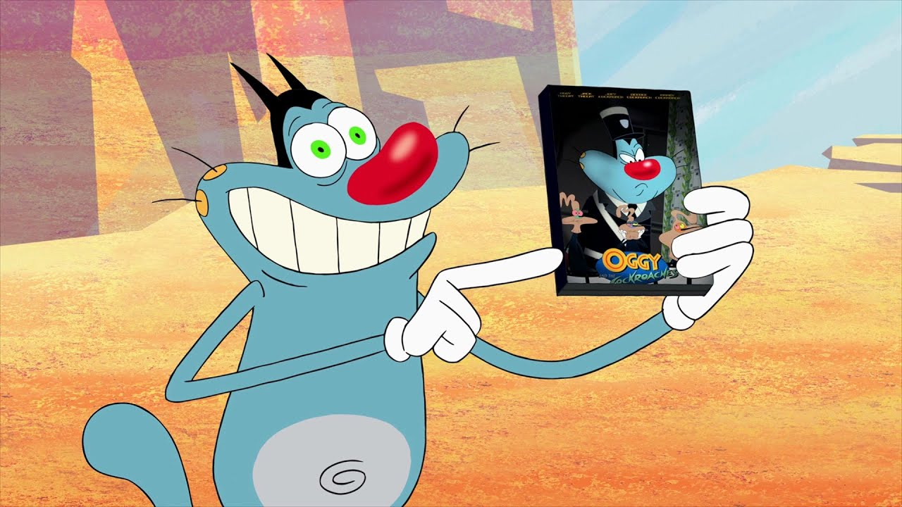

Pink Panter
The Pink Panther is a fictional animated character who
Pink Panter
The Pink Panther is a fictional animated character who appears in the opening and/or closing credit sequences of every film in The Pink Panther series except for A Shot
in the Dark and Inspector Clouseau.
Ben 10 is an American media franchise
created by Man of Action Studios and produced by Cartoon Network Studios
and owned by Warner Bros. Discovery.
Pink Panter
The Pink Panther is a fictional animated character who appears in the opening and/or closing credit sequences of every film in The Pink Panther series except for A Shot
in the Dark and Inspector Clouseau.
 TOM and CERRY
TOM and CERRY Tom and Jerry is an American animated media franchise and series
of comedy short films created in 1940 by William Hanna and Joseph Barbera.
 OGGY cartoon
"Oggy and the Cockroaches" can't be compared to no cartoon I've ever seen,
and that makes it so good and original.It must not be seen as common entertainment,
but as a unique and deep look at the world.
"Oggy and the Cockroaches" can't be compared to no cartoon I've ever seen,
and that makes it so good and original.It must not be seen as common entertainment,
but as a unique and deep look at the world.
Ben 10 is an American media franchise
created by Man of Action Studios and produced by Cartoon Network Studios
and owned by Warner Bros. Discovery.